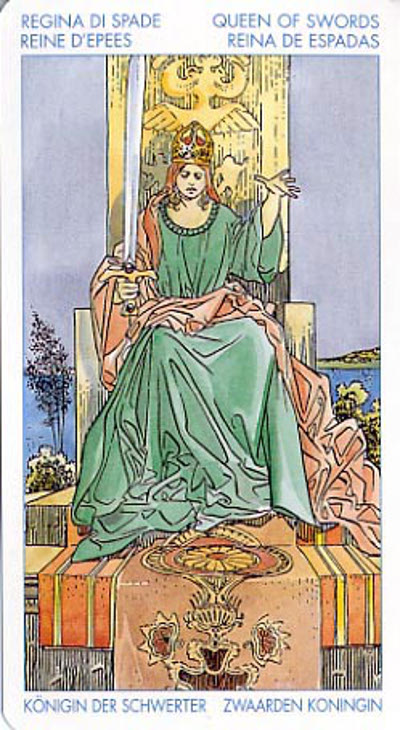

Королева Мечей
Дама или Владычица Мечей.
Королева Мечей страстно любит правду и свободу, это сильная и независимая женщина, которая полностью контролирует силу своего разума. Для того, чтобы преуспеть в жизни, она пользуется как обаянием, так и логикой.
Ее честность, объективность беспристрастность превращает ее в великолепного союзника, друга или бизнес-партнера.
Она может быть страстной и загадочной любовницей, в то же время она может не проявлять желания посвящать все свое время отношениям с близким человеком.
Прямое положение: вдовство, женская печаль, бесплодие, траур, разлука.
Значение: Эта карта символизирует женщину, занявшую прочное положение в жизни. Она – прекрасная супруга и мать. Ее любят и уважают коллеги по работе и, возможно, по общественной деятельности: ей тесно в своих четырех стенах, она ищет и находит применение своим способностям. Правда, достичь этого она смогла лишь ценой упорного труда и преодоления многих препятствий. Зато теперь она приобрела опыт и умеет им пользоваться.
В прямом положении может означать разъяснение, прояснение какой-либо ситуации, а также полный контроль над собой, своими реакциями и поступками, что на практике обычно означает успех задуманного дела.
Может быть хорошим предзнаменованием для любых интеллектуальных усилий, указывая на успех в сфере общения, на экзаменах, в литературе, в политике и в спорах.
Обычно карта указывает на крайне целеустремленного человека. Очень часто королева мечей движима любовью или ненавистью, то есть ее действиями управляют эмоции. Еще один аспект этой карты: она всегда представляет максималиста.
Если в раскладе выпала Королева Мечей, вы привыкли идти к цели, невзирая на препятствия на пути, а порой - и на желания других людей.
Значение этой карты может быть смягчено положительными Старшими Арканами (такими как «Звезда», «Воздержанность»).
Авторитетная,умная,но злая женщина. Жестока, безжалостна, в лучшем случае--безразлична.Сильный характер, иногда деспотизм. Женщина,которая всегда использует мужчин.Чаще всего бывает одинока.Для мужчин--знак,что с подобной дамой лучше не связываться. Для женщин--признак подлой или использующей их подруги.Также знак вдовства,утраты,лишений.
Королева Мечей — карта женского неблагополучия, отсутствия детей, траура.
В перевернутом положении – преувеличенное стремление все контролировать, что ведет как раз к утрате контроля над ситуацией, а тем самым и к потерям и даже лишениям.
Эта карта может указывать на обман, одиночество или на трудности, связанные с разводом, расставанием или со смертью.